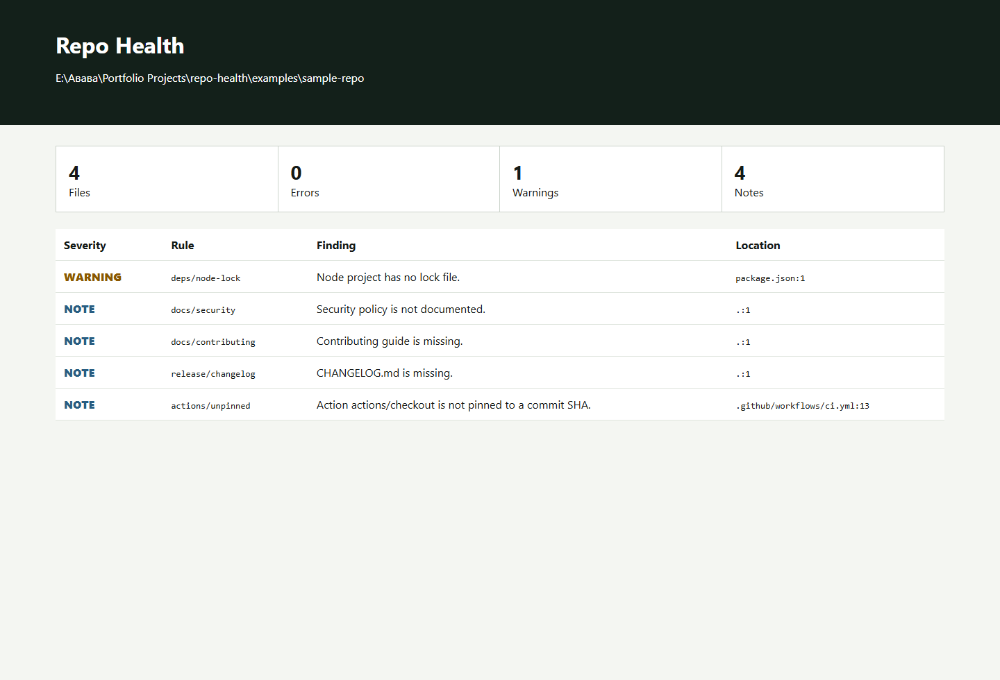

Repository checks
Secrets, Actions, dependencies, licenses, docs, release hygiene, symlinks, and sensitive filenames.
Developer tooling case study
A private-by-default Python auditor that turns repository hygiene checks into terminal output, machine-readable reports, and an autonomous local dashboard.
01 / Problem
Secrets, permissive workflows, missing lock files, unclear licensing, and incomplete release files are visible risks. The goal was one local command that reports them without uploading source code.

02 / System
Secrets, Actions, dependencies, licenses, docs, release hygiene, symlinks, and sensitive filenames.
Versioned JSON for automation, SARIF for code scanning, and standalone HTML for review.
Known findings can be suppressed by fingerprint while new and resolved findings remain comparable.
Ignored dependency and build directories are pruned before traversal rather than filtered afterward.
03 / Security
Reports contain rule IDs, locations, severity, and fingerprints. Matched values never appear in report output. The CLI opens no network connection and can run entirely offline.
04 / Results
Output formats: JSON, SARIF, HTML.
Primary commands: scan, baseline, compare, serve.
External services required.
Automated scanner and format tests.
Status
The repository includes quickstart, architecture, threat model, changelog, CI, fixtures, and tests.